合建分配比之估計
• (一) 估計方法：
合建權益分配之當事人為地主方與建設方。地主方提供土地，建設方投入建築。前者以比較法及土地開發分析法評估土地價格（以A表示），後者以成本法評估建築成本（以B表示），則地主方之合建分配比為[圖片1]，建設方之合建分配比為[圖片2]。
-
土地價格：以比較法估得比較價格，再以土地開發分析法估得土地開發分析價格，再就此二種價格加權平均後得到土地價格。
-
建築成本：建築成本僅計入營造施工費、規劃設計費及管理費等三項，其餘如廣告費、銷售費、稅捐、資本利息及建築利潤等不計入。不計入之理由在求兩造雙方之公平。
• (二) 估計合建分配比之影響因素：
估計合建分配比之主要影響因素如下：
-
房價：房價愈高，土地開發分析價格愈高，造成地主方之合建分配比提高。
-
容積率：容積率愈高，土地開發分析價格愈高，造成地主方之合建分配比提高。
-
營造施工費：營造施工費愈高，對地主方而言，土地開發分析價格愈低；對建設方而言，建築成本愈高，最後造成地主方之合建分配比降低。由此可知，營造施工費之變動造成雙重影響，影響甚鉅，最為關鍵。
• (三) 多數地主之合建分配比：
設建築基地由四筆土地整合而成，地主方分別為甲、乙、丙、丁，土地價格分別為A1、A2、A3、A4。四筆土地整合後之土地價格為A。另，建設方之建築成本為B。合建分配比有兩種估計方法：
第一種方法：
地主方甲之合建分配比：[圖片3]
地主方乙之合建分配比：[圖片4]
地主方丙之合建分配比：[圖片5]
地主方丁之合建分配比：[圖片6]
建設方之合建分配比：[圖片7]
第二種方法：
地主方甲之合建分配比：[圖片8]
其中：[圖片9]
地主方乙之合建分配比：[圖片10]
其中：[圖片11]
地主方丙之合建分配比：[圖片12]
其中：[圖片13]
地主方丁之合建分配比：[圖片14]
其中：[圖片15]
又，[圖片16]
建設方之合建分配比：[圖片17]
綜上，第一種方法，土地整合利益由建設方享有，故對建設方有利，但對地主方不利；第二種方法，土地整合利益由地主方享有，故對地主方有利，但對建設方不利。
例如：某建設公司擬在一塊建築基地進行合建，這塊建築基地由A、B、C三筆土地構成，地主分別為甲、乙、丙。經評估結果A地總價為2,000萬元，B地總價為3,000萬元，C地總價為4,000萬元，三筆土地合併後評估總價為10,000萬元。另，經評估建設公司投入建築成本為5,000萬元，則其合建分配比如下：
第一種方法：
| 地主方或建設方 | 提供土地價格或投入建築成本（萬元） | 合建分配比（%） |
|---|---|---|
| 地主方或建設方 | 提供土地價格或投入建築成本（萬元） | 合建分配比（%） |
| 甲 | 2,000 | 14.29 |
| 乙 | 3,000 | 21.43 |
| 丙 | 4,000 | 28.57 |
| 建設公司 | 5,000 | 35.71 |
| 合計 | 14,000 | 100 |
第二種方法：
| 地主方或建設方 | 提供土地價格或投入建築成本（萬元） | 調整後提供土地價格或投入建築成本（萬元） | 合建分配比（%） |
|---|---|---|---|
| 地主方或建設方 | 提供土地價格或投入建築成本（萬元） | 調整後提供土地價格或投入建築成本（萬元） | 合建分配比（%） |
| 甲 | 2,000 | [圖片18] | 14.81 |
| 乙 | 3,000 | [圖片19] | 22.22 |
| 丙 | 4,000 | [圖片20] | 29.63 |
| 建設公司 | 5,000 | 5,000 | 33.34 |
| 合計 | 14,000 | 15,000 | 100 |
這篇文章考過哪些題目
讀完試著自己作答，再點進去對答案。依文字相似度自動比對，不一定完全對應。
- 104 地特三等《不動產估價》第 4 題
何謂聯合開發權益分配？應如何估價？其與都市更新權利變換估價有何異同？請說明之。（25分） - 107 經紀人《不動產估價概要》第 24 題
三筆土地分別為1500 萬元、2500 萬元及6000 萬元，今決定將三筆土地合併開發，經評估合併後土地總價值為1 億5… - 111 高考《不動產估價》第 4 題
請說明目前國內容積移轉折繳代金估價之方法為何？並說明有何檢討改進之處。（25分） - 113 經紀人《不動產估價概要》第 2 題
請說明土地開發分析法之計算公式，又土地開發分析法之成本項目內容為何？（25 分）
文章圖片
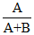
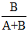
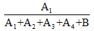

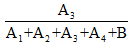
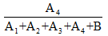
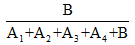
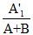
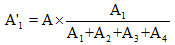
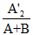
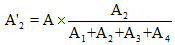


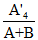

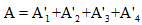


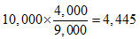
注：本文圖片存放於 ./images/ 目錄下